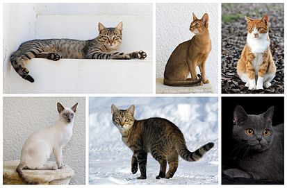

Кошка
Дома́шняя ко́шка (лат. Felis catus) — домашнее животное, одно из наиболее популярных (наряду с собакой) «животных-компаньонов».
С точки зрения научной систематики, домашняя кошка — млекопитающее семейства кошачьих отряда хищных. Нередко домашнюю кошку рассматривают как подвид лесной кошки (>Felis silvestris) — Felis s. catus, однако, с точки зрения современной биологической систематики (2017 год), домашняя кошка является отдельным биологическим видом.
Являясь одиночным охотником на грызунов и других мелких животных, кошка — социальное животное, использующее для общения широкий диапазон звуковых сигналов, а также феромоны и движения тела.
В настоящее время в мире насчитывается около 600 млн домашних кошек, выведено около 200 пород, от длинношёрстных (персидская кошка) до лишённых шерсти (сфинксы), признанных и зарегистрированных различными фелинологическими организациями.
На протяжении 10 000 лет кошки ценятся человеком, в том числе за способность охотиться на грызунов и других домашних вредителей.
Значение и этимология слова «кошка»
В русском языке слово кошка означает либо представителя биологического вида Felis catus вообще независимо от пола, либо самку этого вида. Самца называют кот, а детёныша кошки — котёнок (мн. ч. котя́та). Слово кошка в русском языке является диминутивом от др.-русск. слова «котъка», которое в свою очередь происходит от существительного «кот» и является родственным лат. cattus — кошка (так в поздней латыни, начиная с V века, в отличие от классического латинского felis) и близким названиямво многих языках Европы и Ближнего Востока (англ. cat, арм. k’at’u, галл. cath, ирл. catt, исп. gato, итал. gatto, рут. gyat, лезг. кац, лит. katė, нем. Katze, нуб. kadis, прусск. catto, фр. chat). Первоначальный источник неизвестен, но принято считать, что во многие языки слово попало из латинского.
Некоторые исследователи предполагают, что в основе слов различных индоевропейских языков, обозначающих кошку, лежит праиндоевропейский корень «*kat-», от которого произошли глаголы индоевропейских языков, означающие «котиться», от которых позднее произошли названия детёнышей мелких животных на индоевропейских языках. Другие исследователи считают такую связь вторичным сближением.
Звукоподражательными, близкими русскому «мяу», являются названия кошки в древнеегипетском (mj.w) и китайском языках (māo).
Научная классификация
В 1758 году Карлом Линнеем в «Системе природы» домашней кошке было присвоено биномиальное название Felis catus. Иоганн Христиан фон Шребер в 1775 году дал дикой кошке название Felis silvestris
На основании данных, полученных современной филогенетикой, домашняя кошка является одним из пяти подвидов дикой кошки Felis silvestris, и её правильное международное научное название — Felis silvestris catus. Решение о закреплении за дикой кошкой названия F. silvestris, а за её одомашненным подвидом — названия F. silvestris catus, было принято в 2003 году Международной комиссией по зоологической номенклатуре, при этом было оговорено, что если в какой-либо классификации домашняя кошка будет описываться как отдельный вид, то в этом случае для названия соответствующего таксона следует использовать комбинацию, предложенную Линнеем, — F. catus.
В литературе встречаются и другие названия, используемые в качестве международного научного (латиноязычного) названия домашней кошки: Felis catus domesticus, Felis silvestris domesticus, а также предложенное в 1777 году Иоганном Христианом Поликарпом Эркслебеном в «Началах естествознания» название Felis domesticus (изначально — Felis domestica, поскольку слово Felis в те времена считалось женского рода). Все эти названия входят в синонимику таксона, а потому не должны использоваться.
В качестве русского названия данного таксона в научной (научно-популярной) литературе используется как выражение «домашняя кошка» (или «кошка домашняя»), так и просто слово «кошка».
Происхождение и история одомашнивания
Согласно генетическому исследованию аутосомных маркеров и митохондриальной ДНК 979 домашних, диких и одичавших кошек с трёх континентов, в том числе барханных кошек (Felis margarita), все домашние кошки по материнской линии происходят как минимум от пяти представительниц подвида степная кошка (Felis silvestris lybica), имеющих разные гаплотипы митохондриальной ДНК. В митохондриальной гаплогруппе IV, специфической для ближневосточных и домашних кошек, идентифицировали 6 субклад и рассчитали время жизни общего предка — ок. 13 тыс. лет назад, что значительно превышает время предполагаемого одомашнивания ближневосточных кошек. Генетический анализ митохондриальной ДНК 209 кошек из 30 захоронений на территории Европы, Ближнего Востока и Северной Африки показал, что домашние кошки распространялись по миру двумя большими волнами. Первая волна имела место на заре сельского хозяйства 12—9 тыс. лет назад — в Плодородном полумесяце и его окрестностях домашние кошки расселились вместе с земледельцами по всему Ближнему Востоку. Несколько тысяч лет спустя вторая волна, вышедшая из Египта, охватила практически всю Европу и Северную Африку.
Обособление подвида Felis silvestris lybica произошло около 130 тысяч лет назад. Степная кошка до сих пор распространена по всей Северной Африке и в обширной зоне от Средиземноморья до Китая, где она обитает в зарослях саксаула в пустынях, в кустарниках возле водоёмов, в предгорьях и горах. Хотя мелкие дикие кошки разных подвидов могут скрещиваться между собой и давать потомство, результаты генетических исследований показали, что в филогенезе домашней кошки другие подвиды Felis silvestris, кроме степной кошки, участия не принимали.
Одомашнивание кошки произошло примерно 9500 лет назад на Ближнем Востоке в районе Плодородного полумесяца, где зародились и развивались древнейшие человеческие цивилизации. Одомашнивание кошки началось при переходе человека к оседлому образу жизни, с началом развития земледелия, когда появились излишки пищи и возникла необходимость их сохранения и защиты от грызунов.
Древнейшее археологическое свидетельство одомашнивания кошки было обнаружено на Кипре, где в ходе археологических раскопок было найдено совместное захоронение человека и кошки, которое датируется 7500 годом до н. э. Также было установлено, что остров Кипр был колонизирован выходцами из районов современных Анатолии (Турция) и Сирии.
Ранее учёные полагали, что первыми одомашнили кошек древние египтяне. Однако самые ранние свидетельства приручения кошек древними египтянами относились к 2000—1900 годам до нашей эры. А недавно было установлено, что в Древний Египет домашняя кошка попала, как и на Кипр, с территории Анатолии. В настоящее время кошка является одним из самых популярных домашних животных.
Несмотря на то, что кошки были одомашнены достаточно давно, большинство кошек способны выживать в условиях нахождения вне человеческого жилья, пополняя ряды вторично одичавших кошек, так как в условиях бродячей жизни кошки обычно быстро повторно дичают. Вторично одичавшие кошки часто живут уединённо и охотятся в одиночку, но иногда образуют небольшие колонии из нескольких самок с котятами.
Вопрос о полном одомашнивании
В наше время среди учёных нет точного ответа, является ли кошка полностью одомашненным животным, так как, например, собака в процессе одомашнивания изменила свою модель поведения, сумев развить довольно сильную привязанность и преданность к человеку, и одновременно утратила множество способностей к охотничьему образу жизни и сигнальному общению, присущих её предкам — волкам. Кошка же по поведению почти не отличается от своего дикого предка, демонстрируя высокую независимость и повадки «одинокого хищника».
Некоторые учёные считают, что кошка и вовсе не является одомашненным животным, а сама могла прийти к человеку, так как в селениях всегда в достатке водились синантропные животные или, проще говоря, многочисленные грызуны и птицы. Таким образом, кошка нашла для себя удобный источник пищи, закрепившись в «новой нише». Сосуществование человека и кошки было взаимовыгодным, так как человек избавлялся от грызунов, которые часто становились источником заболеваний и порчи хозяйства. Также весомым доводом противников идеи одомашнивания остаётся тот факт, что, по их мнению, кошка показывает любопытство к человеку только до тех пор, пока ей это выгодно, то есть маленький хищник не способен на верность. Другие же учёные продвигают иную точку зрения. По их мнению, тот факт, что кошки подвергались одомашниванию, подтверждается тем, что они способны на привязанность и игривое поведение, и именно для установления эмоционального контакта с человеком научились мурлыкать. Многие кошки показывают свою привязанность, устанавливая физический контакт с человеком, например, забираясь ему на колени; известны случаи, когда преданность кошки хозяину была сильнее, чем у многих собак, и это на фоне того, что кошки произошли из «опаснейших и неприветливейших хищников в мире». На негативный образ кошки как дикого и подозрительного животного повлиял и продолжает влиять тот факт, что в средневековой Европе Католическая церковь обвиняла кошек в связи с дьяволом и колдовством.
Несмотря на споры, большинство учёных сошлись во мнении, что кошка является полуодомашненным животным, то есть она способна на сосуществование с человеком, но, потеряв с ним контакт, легко возвращаются к дикому образу существования. Хотя у кошки наблюдаются генетические изменения в сравнении с диким предком, эта разница в 10 раз меньше, чем у собак с волками. Учёные считают, что дикая кошка действительно могла сама прийти к человеку, чтобы питаться грызунами, а такие отношения характеризовались как соседские, и уже через несколько тысяч лет люди сами стали одомашнивать маленьких хищников. Это также, вероятно, объясняет, почему модель поведения кошки почти не изменилась; при одомашнивании собаки из волка человек изменил её образ жизни и среду обитания, кошка же претерпела минимальные изменения. Кошка сумела сохранить модель поведения, присущую её диким предкам. Она почти так же хорошо охотится, как дикая кошка, но в то же время способна мирно сосуществовать с человеком, проявлять к нему эмоциональную привязанность, нежность или даже выказывать игривое поведение.
Биология
Физиология
Нормальная внутренняя (ректальная) температура тела взрослой кошки составляет +38…+39,5 °C, у котят она несколько выше. У бесшёрстных пород кошек внутренняя температура тела такая же, как и у всех кошек, однако из-за отсутствия шёрстного покрова на теле кошки температура кожных покровов у сфинксов или петерболдов человеком тактильно воспринимается как более высокая.
Частота пульса у взрослых кошек варьирует в зависимости от физической и психической активности и составляет от 120 до 220 ударов в минуту. Частота дыхания составляет в среднем 20—40 дыхательных движений в минуту.
У кошек выделены три группы крови — А, B и АВ. Кошки с группой крови А могут иметь антитела к группе крови В, и наоборот. Кошки с группой крови АВ не имеют антител ни к группе крови А, ни к группе В, поэтому они могут быть реципиентом обеих групп крови при переливании. Группа крови АВ самая редкая, она встречается у 1 % всех домашних кошек и поэтому остаётся малоизученной, однако учёным удалось установить, что АВ по своему происхождению не связана с группами крови А и В.
Механизм лакания жидкости кошкой состоит в том, что её язык вытягивается со скоростью 1 м/с, подгибается вниз и касается поверхности жидкости, но, в отличие от лакания собак, не проникает в неё. Затем язык устремляется вверх и увлекает за собой столбик жидкости. Кошка заглатывает жидкость в тот момент, когда вертикальная составляющая скорости жидкости замедляется гравитацией и становится равной нулю. В этот момент челюсти кошки смыкаются, и жидкость проглатывается. Этот процесс повторяется с периодичностью 4 раза в секунду.
Анатомия
Средняя длина тела кошки без хвоста 60 см, длина хвоста 25—35 см. Как правило, самки меньше самцов, как и у прочих млекопитающих (явление полового диморфизма). Самая крупная кошка, согласно «Книге рекордов Гиннесса», достигает в длину 121,9 см.
Вес средней здоровой кошки составляет 2,5—6,5 кг, но встречаются и более крупные экземпляры, вес которых достигает 7—9 кг. Коты пород сибирская кошка и мейн-кун могут достигать веса 11,5—13 кг. Кошки могут достигать массы 20 кг, а самый тяжёлый кот имел вес 21,3 кг. Обычно сравнительно большой вес кошки является следствием ожирения.
Кошка является типичным мелким хищником с характерными особенностями анатомии. Скелет кошки сформирован примерно из 240 костей и состоит из двух отделов: осевого и периферического. Осевой отдел скелета представлен черепом, позвоночником и грудной клеткой. Периферический скелет или скелет конечностей состоит из 2 грудных (передних) и 2 тазовых (задних) конечностей.
Череп и позвоночник предохраняют центральную нервную систему (головной и спинной мозг) от повреждений. Позвоночник кошки состоит из 7 шейных, 13 грудных, 7 поясничных позвонков, 3 сросшихся крестцовых и 20—26 хвостовых позвонков. К позвонкам прикреплены 13 пар рёбер. Рёбра вместе с грудными позвонками и грудиной образуют грудную клетку. Первые 9 пар рёбер соединены непосредственно с грудной костью, остальные 4 пары свободны. Кости передних конечностей соединены с грудной клеткой соединительной тканью и мышцами.
Череп кошки отличается от черепов других млекопитающих очень большими глазницами и мощными и специализированными челюстями, а также приблизительно одинаковым развитием лицевого и мозгового отделов. Мозговая часть черепа кошки состоит из 11 костей, а лицевая из 13. Мозг средней кошки имеет размер 5 см в длину и весит 30 г.
У кошки 30 зубов (16 на верхней челюсти и 14 на нижней), из них 12 резцов, 4 клыка, 10 премоляров и 4 моляра. Зубы кошки приспособлены для убийства добычи и разрывания мяса. Поймав добычу, кошка наносит ей укус двумя длинными клыками, вонзая их между двумя позвонками жертвы, тем самым перерезая спинной мозг жертвы, что приводит к необратимому параличу и смерти. Зубная формула кошки типична для кошачьих.
Отличительная черта строения глаза кошки, характерная для многих млекопитающих — наличие мигательной перепонки (так называемое третье веко) — тонкой складки конъюнктивы, которая выдвигается из внутреннего угла глаза и выполняет защитную функцию. Она очищает поверхность видимой роговицы глаза от пыли и смачивает её. Третье веко можно увидеть, когда кошка спит с приоткрытыми глазами или чувствует усталость. Если третье веко видно постоянно, в том числе, когда кошка бодрствует, это в большинстве случаев может быть признаком болезни.
Шерсть кошки имеет свойство наэлектризовываться от трения, поэтому при чистке щёткой и расчёсывании слегка увлажняют шерсть или щётку. Накопление статического электричества может происходить постоянно при нахождении кошки в слишком сухой атмосфере, в таких случаях применяют увлажнители воздуха.
Неизученные области
Одной из неизученных областей анатомии кошек является карман Генри на их ушах. На данный момент его функциональное назначение неизвестно.
Органы чувств
По мнению многих зоологов, среди млекопитающих органы чувств наиболее развиты у кошек. Хотя слух у них развит хуже, чем, например, у мышей, превосходные (по человеческим меркам) зрение, обоняние и слух в сочетании с тактильными и вкусовыми рецепторами делают кошек очень чувствительными животными.
Зрение
Среди домашних животных у кошки самые большие глаза относительно размеров тела. Как и у большинства хищников, глаза кошки направлены вперёд, и их зрительные поля перекрываются. Поэтому кошки обладают стереоскопическим зрением, позволяющим оценивать расстояние до предмета наблюдения. Около 60 % кошек способны к движениям глаз, при которых зрительные оси сходятся и расходятся. Поле зрения у кошек составляет 200°, против 180° у человека. В жёлтом пятне на сетчатке глаза у кошек отсутствует центральная ямка (fovea), а вместо неё имеется диск, где находятся колбочки. Палочек в сетчатке глаза в 25 раз больше, чем колбочек, что обусловлено тем, что кошка является ночным хищником, поэтому способность видеть при слабом освещении (за которую отвечают именно палочки в сетчатке) является для неё приоритетной.
Кошки умеют различать цвета, но по сравнению с человеком восприятие цвета у них слабее — менее контрастное и яркое. У кошек (как и большинства других млекопитающих, кроме приматов) есть два типа колбочек — чувствительные к более длинноволновому и коротковолновому свету. «Длинноволновые» колбочки кошки содержит опсин, имеющий максимум поглощения в области 553 нм. Считается, что у большинства млекопитающих отсутствуют «зелёные» колбочки (соответствующие средневолновым колбочкам приматов), поэтому их цветовое зрение напоминает таковое у человека при дейтеранопии (разновидность дальтонизма). Замечено, что неподвижные и близко стоящие предметы кошка воспринимает хуже, чем движущиеся. У кошек способность к фокусировке зрения на предметах в 2—3 раза меньше, чем у высших обезьян и человека.
Кошки превосходно видят в условиях слабого освещения. За сетчаткой глаза располагается особый слой — тапетум, который у кошек, как и у большинства животных, содержит большое количество люминесцентного пигмента (tapetum lucidum). Функция тапетума заключается в отражении обратно на сетчатку той части света, которая проходит сквозь полупрозрачный слой светочувствительных клеток и которая без тапетума безвозвратно терялась бы. Благодаря тапетуму и другим механизмам, светочувствительность глаза кошки в 7 раз выше, чем у человека, и кошки могут хорошо видеть даже при слабом освещении, но при ярком свете они видят хуже человека. Из-за интенсивной пигментации тапетума кошачьи глаза при их освещении в темноте светятся жёлто-зелёным.
Пигментация тапетума тесно связана с пигментацией радужной оболочки. У голубоглазых кошек (также как и у собак), независимо от цвета шерсти, тапетум пигментирован слабо и их зрачки отсвечивают красным цветом и менее ярко — как у человека (tapetum nigrum). Это позволяет предположить, что ночное зрение голубоглазых кошек такое же слабое, как у человека. Котята рождаются голубоглазыми, то есть со слабо пигментированной радужкой и, соответственно, со слабо пигментированным тапетумом. Примерно к 3-месячному возрасту, когда у желтоглазых и зеленоглазых кошек радужка насыщается пигментом, пигментируется и тапетум. Оттенок свечения зрачков также зависит от угла падения света, так как пигментация тапетума снижается по направлению от задней стенки глазного яблока к передней и его оттенок меняется градиентом: жёлто-зелёный, бирюзовый, голубой, синий, фиолетовый, красный, чёрный. Но при фронтальном ракурсе у кошек с хорошо пигментированной радужкой зрачки светятся жёлто-зелёным цветом.
Вопреки распространённому заблуждению, в абсолютной темноте кошки видеть не могут.
Чтобы уменьшить световой поток на сетчатке при ярком освещении, зрачок кошачьего глаза может изменять форму. Причём он не круглый, как у человека, а вертикально-овальный вплоть до щелевидного, так как радужная оболочка сжимается с помощью мышечных волокон неравномерно; такими же способностями обладают глаза у лис, относящихся к семейству псовых. Радужная оболочка служит диафрагмой, регулируя количество света, проникающего внутрь глаза.
Слух
Орган слуха домашней кошки подразделяется на три отдела — наружное ухо, среднее ухо и внутреннее ухо, откуда импульсы поступают в центры слуха в головном мозге.
Кошки обладают направленным слухом, то есть шумы сортируются по направлению. Кошки могут двигать ушной раковиной в сторону источника звука, причём каждой ушной раковиной независимо друг от друга, поэтому кошка может следить одновременно за двумя источниками звука. Этими движениями управляют более десятка мышц, благодаря чему ушная раковина может поворачиваться почти на 180°. При этом кошка обладает способностью пространственного слуха — может распознать силу звука, его удаление и высоту, и на основании этих данных очень точно оценить месторасположение его источника. Слух кошек настолько хорошо развит, что они в состоянии с закрытыми глазами ориентироваться в пространстве на шорох и писк и ловить пробегающих мимо мышей; слух человека не в состоянии столь точно позиционировать месторасположение источника шума.
Кошки могут воспринимать ультразвуковые сигналы. Диапазон слышимых звуков у кошки ещё недостаточно изучен; по некоторым данным, он заключён между 45 Гц и 64 000 Гц, по другим данным доходит до 100 000 Гц. У кошки нет органа, который производит ультразвук, поэтому кошки не используют для общения ультразвук, недоступный нашему восприятию, однако они способны слышать ультразвук, чем пользуются во время охоты, так как ультразвуковое общение грызунов происходит в промежутке 20—50 кГц, в то время как кошки способны слышать ультразвуки до 65—70 кГц. В ухе кошки около 13 тысяч воспринимающих клеток, что несколько меньше, чем у человека, однако у кошки около 52 000 передающих нервных окончаний в слуховом нерве, тогда как у человека их значительно меньше — 31 000.
Осязание
Осязательные функции у кошек выполняют особые тактильные (осязательные) волоски, расположенные с двух сторон в четыре ряда над верхней губой, над глазами, под подбородком — вибри́ссы (в обиходе — усы), а также чувствительные волоски на хвосте, на внутренней и тыльной стороне конечностей (запястные волоски), на подушечках лап, между пальцев, на кончиках ушей и в ушах. Ни в коем случае нельзя кошке удалять вибриссы, так как этим она фактически будет лишена своей «системы ориентации и навигации» в пространстве. Опытным путём было установлено, что чем слабее зрение у кошки, тем длиннее и толще у неё вибриссы, а у кошек, которые родились с нарушением зрения, вибриссы превышают 8 см. Вибриссы также показывают настроение животного: направленные вперёд усы часто означают любопытство или настороженность, в то время как при агрессии кошка прижимает усы к морде, хотя и умиротворённая, мурлыкающая кошка тоже прижимает усы к щекам.
Кожное осязание у кошек сильно развито.
Обоняние
У кошек сильно развито обоняние, что объясняется наличием у них хорошо развитой обонятельной луковицы и большого количества сенсорных клеток обонятельного эпителия носовой полости. У кошек поверхность обонятельного эпителия составляет 5,8 см², что в два раза больше, чем у человека, и только в 1,7 раз меньше, чем у средней собаки. Благодаря этому обоняние у кошек примерно в 14 раз сильнее человеческого, что позволяет им чувствовать запахи, о которых человек даже не подозревает. В верхней части полости рта у кошек расположен вомероназальный орган, который позволяет им чувствовать особо тонкие запахи при вынюхивании. При этом кошка приоткрывает пасть и втягивает губы, собирая кожу на голове в своеобразную гримасу, демонстрируя т. н. реакцию флемена, присутствующую также у собак, лошадей и некоторых других млекопитающих.
Кошки также очень чувствительны к кошачьим феромонам, таким, как образующийся при деградации синтезируемой кошками аминокислоты фелинина 3-меркапто-3-метилбутан-1-ол, которые они используют для общения между собой, разбрызгивая мочу и метя свою территорию с помощью выделений из пахучих желёз. Пахучие железы котят начинают производить пахучие вещества с возраста трёх месяцев. Также кошки вместе с экскрементами выделяют небольшое количество пахучей жидкости из анальных желёз. Такие железы есть у многих хищных, в частности, у скунсов они используются для самообороны.
Восприятие вкуса
Кошки хорошо ориентируются во вкусах, различают кислое, горькое и солёное. Разборчивость эта обусловлена, прежде всего, хорошим нюхом и развитыми вкусовыми рецепторами на языке. Долгое время считалось, что в отличие от большинства млекопитающих кошки не воспринимают сладкое, поскольку соответствующий ген у них повреждён, однако последние исследования опровергли эту информацию.
Вестибулярный аппарат
За чувство равновесия у кошек отвечает хорошо развитый вестибулярный аппарат, расположенный во внутреннем ухе. Кошки могут безбоязненно передвигаться по конькам крыш, заборам и сучьям деревьев. При падении они могут рефлекторно принять в воздухе положение, нужное для приземления на лапы. При этом роль стабилизатора выполняет очень подвижный хвост (у бесхвостых кошек стабилизатором выступает всё тело). Дополнительным предохраняющим средством служит рефлекторное расставление лап в стороны, в результате чего поверхность тела кошки увеличивается, и срабатывает «эффект парашюта». Однако в случае падения с большой высоты (из окон многоэтажных домов) этот рефлекс не всегда срабатывает, и животное может разбиться, что связано с эффектом «шока» при выпадении из окна. При падении с малой высоты (например, с рук ребёнка) времени на разворот может быть недостаточно, и кошка также может травмироваться. Как показали новые исследования, при падении с большой высоты кошки приземляются не на лапы, а скорее на живот. В 1976 году ветеринарным врачом из Нью-Йорка Гордоном Робинсоном был описан так называемый «высотный синдром кошек», согласно которому: «чем выше здание, с которого упала кошка, тем меньше повреждений получит животное. То есть, как ни парадоксально, 15-й этаж безопаснее 2-го». Математиком Ричардом Монтгомери была разработана теория, получившая название «теоремы падающей кошки», согласно которой, кошка, падающая спиной вниз, переворачивается спиной вверх, даже если кинетический момент равен нулю.
Размножение
Кошки являются полиэстральными животными, то есть периоды течки у них случаются несколько раз в году и длятся от 4 до 7 дней. В северных широтах начало эстрального цикла приходится на период с февраля по апрель с последующим повтором в июле-августе. Если во время первой течки не произошло оплодотворение, через 14—21 день течка может повториться. Коты в брачный период начинают метить свою территорию. На стадии проэструса кошка жалобно мяукает, трётся мордочкой о предметы, других кошек или других животных в доме, начинает кататься на спине по полу. При появлении кота на этой стадии эструса кошка может фыркнуть на него и отогнать от себя. Стадия проэструса длится от 12 часов до 3 дней. Хотя проэструс наблюдается не у всех кошек столь выраженно. Стадия эструса, когда кошка готова к спариванию, длится 4—7 дней. На стадии эструса кошка начинает громко мяукать и звать кота. На этой стадии кошки могут ставить метки.
Овуляция происходит у кошек в момент спаривания и требует стимуляции. Поэтому оплодотворение у кошек редко происходит во время первого спаривания. При спаривании у кошек часто происходит суперфекундация, то есть оплодотворение двух яйцеклеток во время одного периода течки, поэтому в одном помёте у котят могут быть разные отцы. Если на стадии эструса произошла овуляция, то наступает стадия диэструса, если овуляция не произойдёт, то наступает стадия интерэструса. Диэструс длится 35—100 дней, после чего вновь наступает стадия преэструса и т. д. В северных широтах с октября по январь у домашних кошек длится стадия анэструса — сексуального спокойствия.
Домашние кошки-самки проявляют первые признаки течки уже в 6—8-месячном возрасте. Коты-самцы достигают половой зрелости к 8—10 месяцам. Коты и кошки сохраняют способность к спариванию всю жизнь, однако у старых кошек роды могут закончиться гибелью матери. Беременность у кошек длится 55—60 дней, в помёте обычно от трёх до восьми котят (у первородящих — меньше) размером около 12 см. Котята рождаются глухими и слепыми: способность видеть появляется на 5—10 день после родов, а слышать котята начинают только в возрасте 9—11 дней. Кормление молоком у кошек заканчивается после 8—10 недель после рождения котят, после чего они уже в состоянии питаться мясом.
Кошки считаются идеальными матерями, но ни одна кошка не будет выхаживать больное потомство, в таком случае кошка бросает неполноценных котят и уходит из гнезда. Считается, что коты, обнаружив гнездо с беззащитными котятами (если мать-кошка, например, на охоте), душат их. Однако такое поведение более присуще бродячим и деревенским котам, в ситуации, когда неизвестен отец. Если животные содержатся в условиях, когда у потомства один определённый отец, поведение кота совершенно иное: он является для своих потомков защитником и ухаживает за своим потомством вместе с кошкой. Некоторые коты могут взять на себя обязанности по уходу и защите котят в случае гибели матери-кошки.